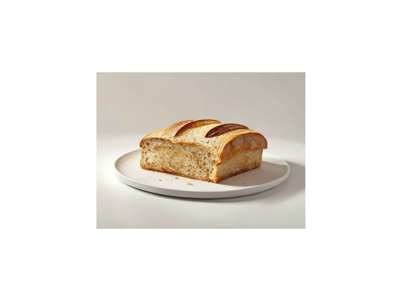

Zboża i kasze
Chleb tostowy
Chleb tostowy: 9 g białka, 265 kcal, 49 g węglowodanów i 3.2 g tłuszczu na 100 g. Kategoria: Zboża i kasze.
Kalorie265 kcalna 100 g
Białko / proteiny9 g
Węglowodany49 g
Tłuszcz3.2 g
Cena (szac.)~1,33 złza 100 g
Ceny zaktualizowano: maj 2026 (szacunek — ceny w popularnych supermarketach)
Porcja: kromka (30g)
| Kalorie | 80 kcal |
|---|---|
| Białko | 2.7 g |
| Węglowodany | 14.7 g |
| Tłuszcz | 1 g |
| Cena (szac.) | ~0,40 zł |
Szczegółowe składniki odżywcze na 100 g
| Wartość energetyczna (kalorie) | 265 kcal |
|---|---|
| Białko (proteiny) | 9 g |
| Węglowodany | 49 g |
| Tłuszcz | 3.2 g |
| Tłuszcze nasycone | 0.8 g |
| Tłuszcze nienasycone | 2.4 g |
| Witaminy i minerały | Magnez, Tiamina (B1), Żelazo |
| Współczynnik kcal / 1 g białka | 29.4 |
| Cena produktu (szac. za 100 g) | ~1,33 zł |
| Cena za 100 g białka (szac.) | ~14,81 zł |